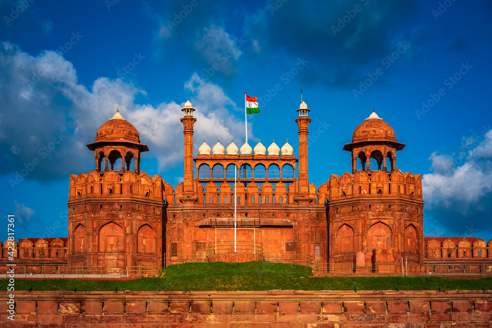

The Taj Mahal (/ˌtɑːdʒ məˈhɑːl, ˌtɑːʒ -/ TAHJ mə-HAHL, TAHZH -; Hindustani: [taːdʒ ˈmɛɦ(ɛ)l];
lit. 'Crown
of the Palace') is an ivory-white marble mausoleum on the right bank of the river Yamuna in Agra, Uttar
Pradesh, India. It was commissioned in 1631 by the fifth Mughal emperor, Shah Jahan (r. 1628–1658), to
house
the tomb of his beloved wife, Mumtaz Mahal; it also houses the tomb of Shah Jahan himself. The tomb is
the
centrepiece of a 17-hectare (42-acre) complex, which includes a mosque and a guest house, and is set in
formal gardens bounded on three sides by a crenellated wall.

The Red Fort, also known as Lal Qila (Hindi pronunciation: [laːl 'qɪlaː]), is an historic Mughal fort
located in the Old Delhi area of Delhi, India. It served as the main residence of the Mughal emperors.
Commissioned by Emperor Shah Jahan on the 12th of May 1639, the fort was constructed following his decision
to shift the Mughal capital from Agra to Delhi. Originally adorned in red and white, the fort's design is
attributed to Ustad Ahmad Lahori, the architect of the Taj Mahal. The Red Fort is a prominent example of
Mughal architecture from Shah Jahan's reign, combining Persian and Indian architectural styles.
The Golden Temple[a] is a gurdwara located in Amritsar, Punjab, India.[3][4] It is the pre-eminent
spiritual
site of Sikhism. It is one of the holiest sites in Sikhism, alongside the Gurdwara Darbar Sahib
Kartarpur in
Kartarpur, and Gurdwara Janam Asthan in Nankana Sahib, both in Punjab, Pakistan.[3][5]
The Hawa Mahal is a palace in the city of Jaipur, Rajasthan, India. Built from red and pink sandstone, it is
on the edge of the City Palace, Jaipur, and extends to the Zenana, or women's chambers.
Hawa Mahal also known as the “palace of winds“[1] was built in 1799 by Maharaja Sawai Pratap Singh. It is
considered unique as it has many small windows and balconies that seem like a honeycomb.[2]
Amer Fort or Amber Fort is a fort located in Amer, Rajasthan, India. Amer is a town with an area of 4 square
kilometres (1.5 sq mi)[2] located 11 kilometres (6.8 mi) from Jaipur, the capital of Rajasthan. Located high
on a hill, it is the principal tourist attraction in Jaipur.[3][4] Amer Fort is known for its artistic style
elements. With its large ramparts and series of gates and cobbled paths, the fort overlooks Maota
Lake,[4][5][6][7] which is the main source of water for the Amer Palace.